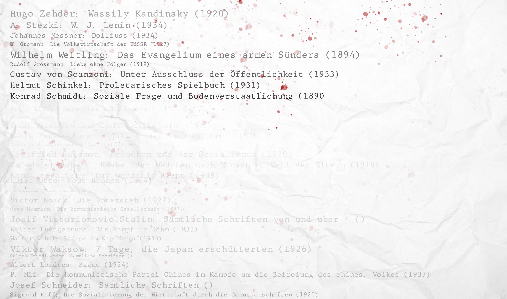
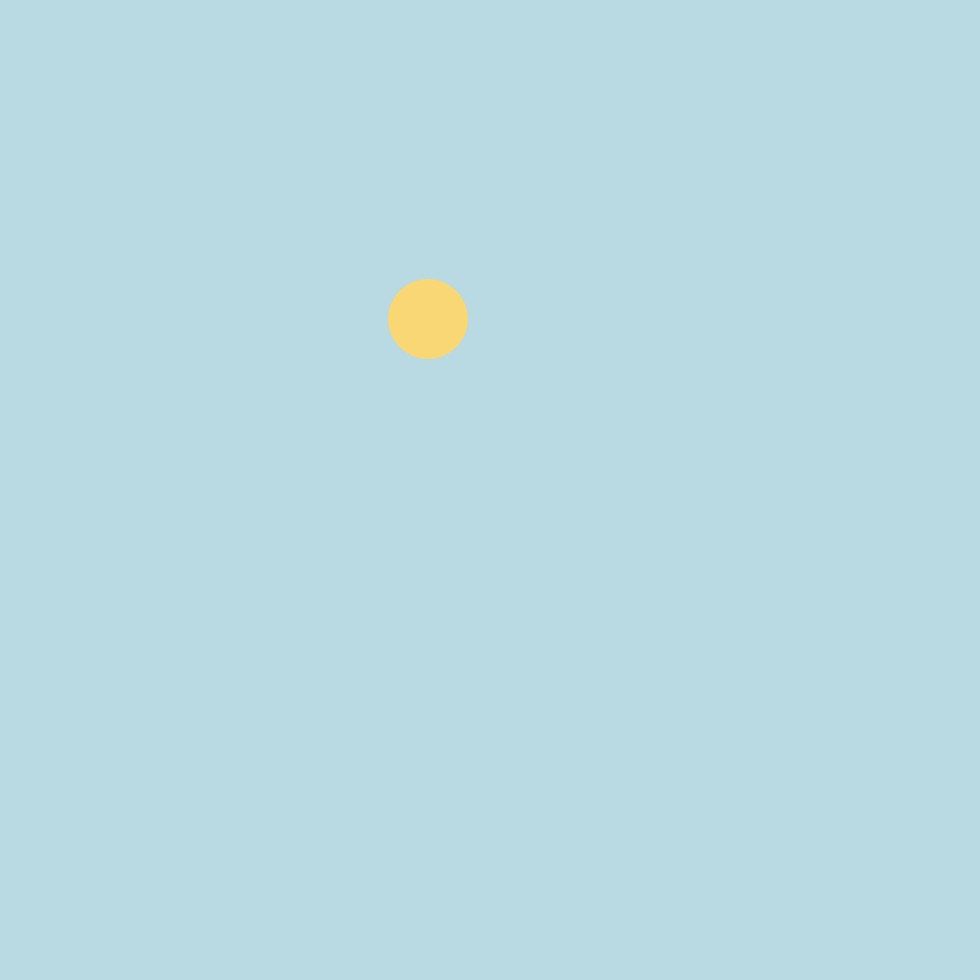
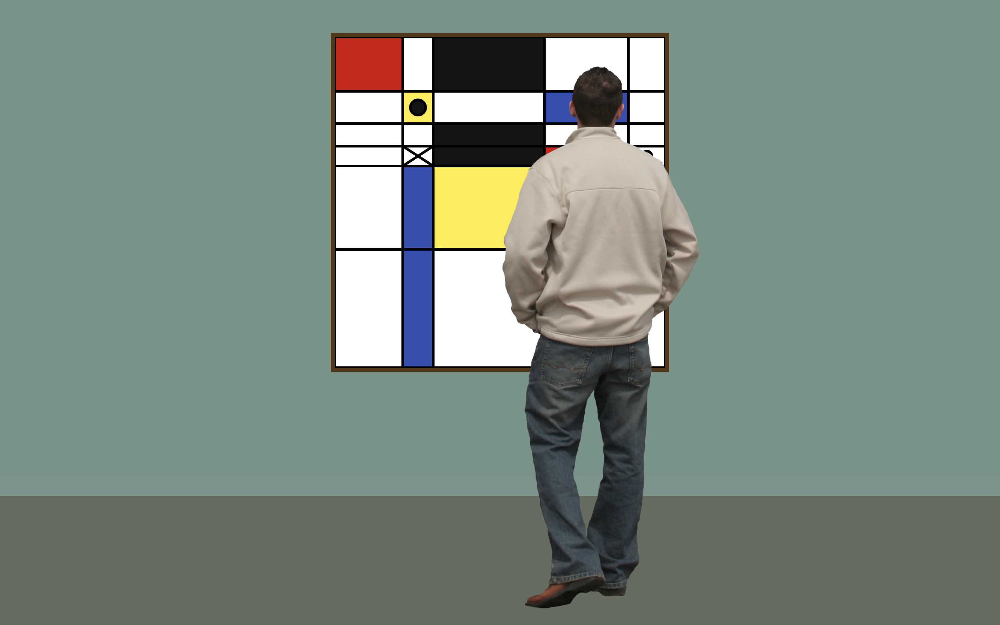
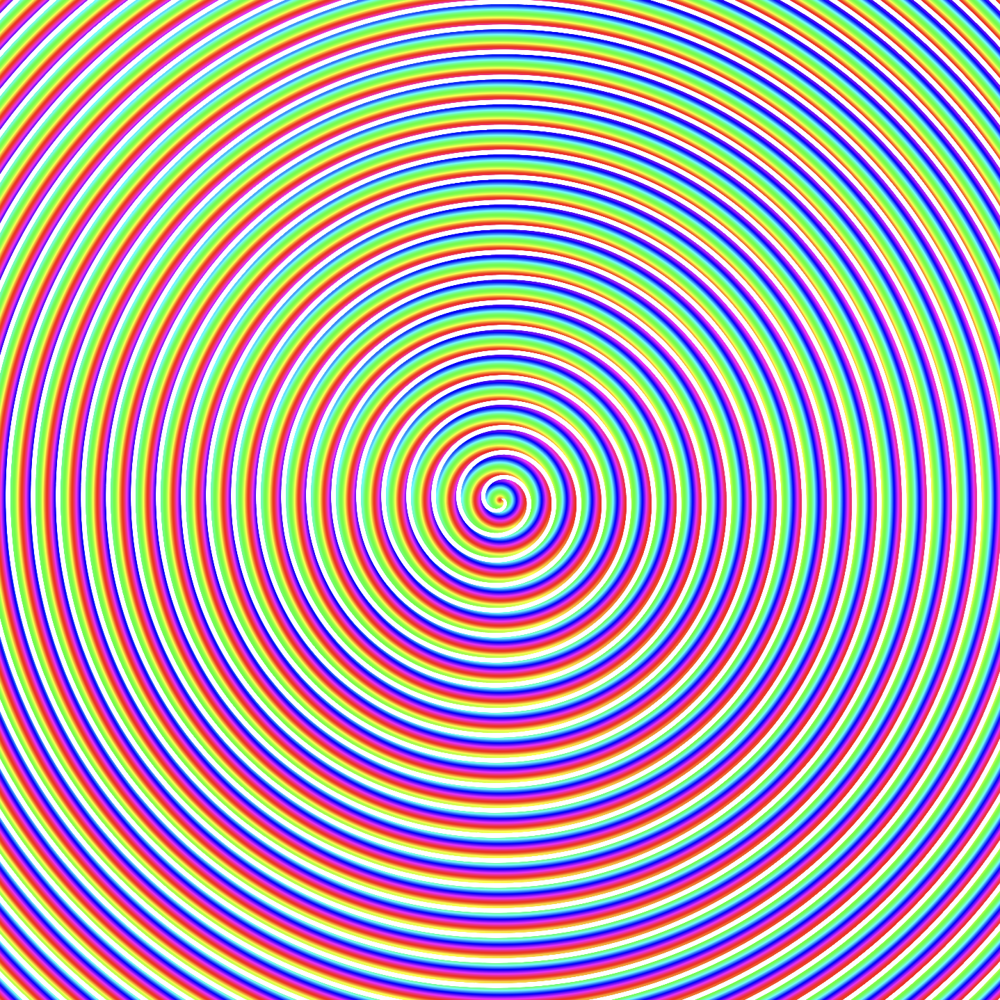

-
hover-preview
Bouncy Balls
Chaos oder Ordnung? Dieser Algorithmus ist das Ergebnis erster Übungen, in denen ich mich mit der Sprache vertraut gemacht habe und verschiedene Funktionalitäten von p5.js kennenzulernen. Dazu gehört unter anderem das Arbeiten mit Zufall und Bewegung, sowie die Herausforderung physikalisch realistisches Abprallen zu ermöglichen. Im Code selbst kann sogar mit Reibung gespielt werden. Die Algorithmen unterscheiden sich deutlich mit variierenden Canvas-Formaten. Vorschau des Algorithmus via Hover.
Anzeigen -
hover-preview
Crazy Bee
Eine sehr simple Übung bezüglich Perlin Noise resultiert in diesen Algorithmen, welcher an eine scheinbar zufällig umherschwirrende Biene erinnert. Der Algorithmus stoppt nach 3000 Frames, um ein angemessenes Ergebnis zu liefern. Vorschau des Algorithmus via Hover.
Anzeigen -

Arbeiten mit Daten
Das (verhinderte?) Verblassen der im Dritten Reich verbotenen Bücher: Um das Arbeiten mit Daten in Verbindung mit p5.js zu erlernen, habe ich einen Datensatz über die im dritten Reich von den Nationalsozialisten verbotenen Büchern gefunden. Das angetsrebte vorsätzliche Vergessen der Werke wird durch ein visuelles Verblassen der Titel auf Papier dargestellt, sowie das verbundene Leid über visuelll starke Bluttropfen vermittelt.
Anzeigen -

Day 'n Night
Visualierung der Tages- oder Nachtzeit, um Arbeiten mit Conditionals zu erlernen. Als weitere Komplexitätsebene wird eine automatische Zeiterkennung integriert, sodass die Anzeige bei festgelegtem Sonnenuntergang in den Nachtmodus wechselt (die Vorschau ist statisch).
Anzeigen -

Tic Tac Toe
Wenn mann Tic Tac Toe gegen Piet Mondrian spielt - die Aufgabe einer kreativen Auseinandersetzung mit dem Spiel Tic Tac Toe mündete in eine zufällige Generierung von angepassten Mondrian Gemälden, welche durch die Hinzunahme von HTML und CSS in Szene gesetzt wird. Neu-Laden der Seite erzeugt ein neues Gemälde.
Anzeigen -
hover-preview
Spinnennetz
Perlin-Noise basiertes kreisförmiges Netz, kreiert durch sich drehende, wandernde Geraden. Ein Zwischenresultat auf dem Weg zu "Yoda vs. Vader", welches in weitestem Sinne an Spinnennetze in Bäumen erinnern kann. Vorschau via Hover.
Anzeigen -

Hypno
Eine der ersten selbstständigen Übungen, um den Umgang mit Farbe und Form und der Draw-Funktion zu erlernen. Die Spirale besteht aus stetig wachsenden und rotierenden, fast geschlossenen Kreisbögen, welche mit jedem Zyklus sich auch im Farbkreis des HSL Spektrums bewegen.
Anzeigen -
hover-preview
Warped
Ein auf Perlin-Noise beruhendes Netz (auch als Punktraster verfügbar), welches sich langsam in mehrere Richtungen über den Bildschirm bewegt und verzerrt angetrieben von mehreren wachsenden und sinkenden Parametern. Dieser Algorithmus arbeitet an der Grenze des Möglichen, was die Rechenzeit pro Frame betrifft und kann weder schneller noch dichter gestrickt sein, was eine große Herausforderung bei der Entwicklung darstellte.
Anzeigen -

Yoda and Vader b2b
Auf Perlin-Noise basierende Light Show beim Gig von Darth Yoda und Lil Vader. Eine Weiterentwicklung des Spinnenalgorithmus eingebettet in ein HTML und CSS Konzert-Setting erinnert die Lightshow des Konzerts an einen Kampf aus den Star Wars Filmen. Dieses Werk ist ein gutes Beispiel, wie die Eerlernten Fähigkeiten in der Realität Anwendung finden können. Eine kleine Limitation dieses Algorithmus stellen die schwach sichtbaren Rückstände früherer "Draw"-Zyklen dar, welche auf schwarzem Hintergrund auch mit anderen Blending Modes nicht verschwinden wollten.
Anzeigen